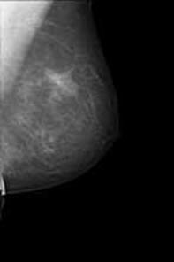
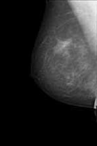

HIMSS and RSNA
Integrating the Healthcare Enterprise
IHE/MESA Image Display Tests
Mammography Image Profile
Electronic Radiology Laboratory
Mallinckrodt Institute of Radiology
510 South Kingshighway Blvd.
St. Louis, MO 63110
314.362.6965 (Voice)
314.362.6971 (Fax)
Revision 10.14.0
14-March-2007
Contents:
Mammography - Image Display Tests
Introduction
Configuration.
Starting the MESA Servers
Submission of Results
Test Images
Individual Tests
- Test 3917: Image SCU Query Keys
- Test 502: SCU Query Evaluation
- Test 3995: Retrieve “For Presentation” Images
- Test 500: Display Calibration
- Test 4000 (00100n): Current and prior with different pixel sizes scaled to fit largest breast
- Test 4002 (004001): Four view phantom ruler set with different matrix sizes – scale-to-fit
- Test 4004 (004002): Four view phantom ruler set with different matrix sizes – true size
- Test 4040 (007001): Identification Attributes for Display
- Test 4045 (007002): Technique Attributes for Display
- Test 4050 (009001): Application of VOI LUT Data – Sigmoid Curve encoded in LUT
- Test 4051 (009002): Application of VOI LUT Data – Scrambled LUT
- Test 4052 (009003): Application of VOI LUT Data – Inverted LUT
- Test 4053 (009004): Application of VOI LUT Function with SIGMOID value
- Test 4054 (009005): Application of VOI LUT Function with LINEAR value
- Test 4060 (011001): Application of Pixel Padding Value
- Test 4062 (012001): Four view set with different matrix sizes
- Test 4070 (013001): Four view set with CAD applied to ‘For Processing’, spatial relationships preserved
- Test 4071 (013002:) Four view set with CAD applied to ‘For Processing’, images need flipping, spatial relationships preserved
- Test 4072 (013003): Four view set with CAD applied to ‘For Processing’, spatial relationships not preserved, marks suppressed
- Test 3915: Partial View Option
- Test 3916: Mammo Image Display - Vendor Interoperability
Appendix A
- Dataset 00100n Notes
- Dataset 004001-2 Notes
- Dataset 007001-2 Notes
- Dataset 009001 Notes
- Dataset 009002 Notes
- Dataset 009003 Notes
- Dataset 009004 Notes
- Dataset 009005 Notes
- Dataset 011001 Notes
- Dataset 012001 Notes
- Dataset 013001 Notes
- Dataset 013002 Notes
- Dataset 013003 Notes
This document describes tests for two grayscale monitor mammography workstations which are Image Display actors in the Mammography Image Profile. The Display Consistency tests are defined in a separate document: Display Consistency Test Plan for Image Displays.
MIR gratefully acknowledges the contribution of David Clunie to this test plan.
These tests and the accomanying dataset were created by David and used
at the North American Connectathon in January 2006. They have
merely been reformatted in MESA test plan style in this document.
Not all of these tests will be required for MESA testing; however, vendors
are encouraged to exercise their system by running of as many as possible.
Consult the Kudu webtool for the list of required tests for your Image Display actor
to be submitted for MESA test results. The remaining tests are candidates
for Connectathon 2007 testing.
The MESA Image Manager maintains a database of DICOM applications used for C-MOVE operations. Add an entry for the storage SCP(s) associated with your workstation. Edit the text file $MESA_TARGET/db/loaddicomapp.pgsql (Unix) or $MESA_TARGET/db/loaddicomapp.sql (Windows). Use the existing entries as a template and add entries for your workstation as appropriate. The column names found in the SQL insert statements are described in the following table.
Column Name |
Description |
aet |
DICOM Application Entity Title. Must be unique. |
host |
Host name (or IP address) of the application. |
port |
TCP/IP port number for receiving associations. |
org |
The organization that operates the device. Useful if multiple organizations use the Image Manager. |
com |
A comment field. |
You can test your work as follows:
perl load_apps.pl imgmgr
The file $MESA_TARGET/runtime/imgmgr/ds_dcm.cfg is used to configure the MESA Image Manager. The only parameter users should change is the LOG_LEVEL value. Log levels are defined in the next section. DICOM configuration parameters are listed in the table below.
Application |
AE Title |
Port |
MESA Image Manager |
MESA_IMG_MGR |
2350 |
Read the Runtime Notes section of the Installation Guide to determine the proper settings for the MESA runtime environment.
These instructions assume you are using a terminal emulator on Unix systems or an MS DOS command window under Windows. Each test uses a command line interface; there is no graphical user interface. Before you start the test procedure, you need to start the MESA Image Manager servers. Make sure the appropriate database is running (PostgreSQL, SQL Server). To start the MESA servers:
- Enter the Image Display exam folder: mesa_tests/rad/actors/imgdisp
- Execute the appropriate script to start the servers:
scripts/start_mesa_servers.csh (Unix)
scripts\start_mesa_servers.bat (Windows)
Log levels are set for the MESA Image Manager in the file: $MESA_TARGET/runtime/imgmgr/ds_dcm.cfg. Log levels are:
- no logging
- errors
- warnings
- verbose
- conversational (really verbose)
When you are finished running one or more tests, you can stop the servers:
scripts/stop_mesa_servers.csh (Unix)
scripts\stop_mesa_servers.bat (Windows)
Log files are stored in $MESA_TARGET/logs.
Test descriptions below inform the reader to “submit results to the Project Manager”. This is does not mean “email”. The current submission process should be documented by the Project Manager, but will not include emailing files directly to the Project Manager.
Images for these tests are distributed along with the MESA Tools and are available at http://ihedoc.wustl.edu. After they are installed, the images referenced in the tests will be found on your sytem under $MESA_STORAGE/MAMMO/IHETESTS/IMAGES.
|
In this test, the Image Display is required to query the MESA Image Manager using specific matching keys. For each matching key and value in the table below, direct the Image Display to make one or more queries of the MESA Image Manager. Repeat or multiple queries are allowed. That is, you might choose to query several times with a certain matching key. We do not expect the Image Display to send individual queries with multiple matching keys (Patient Name and Patient ID), but the test software will allow that.
Attribute Name |
Tag |
Matching Key Value |
Study Date |
0008 0020 |
19950126 |
Accession Number |
0008 0050 |
2001B20 |
Patient Name |
0010 0010 |
Winston^W |
Patient ID |
0010 0020 |
3916 |
Modalities in Study |
0008 0061 |
DX |
References
Instructions
- Create/modify the SQL script to identify the Image Display under test.
- Start the MESA servers as described in Starting the MESA Servers above.
- Load the data sets into the MESA Image Manager.
perl 3917/load_img_mgr.pl
- Send at least one DICOM Study Level C-Find request (Study Root model) to the MESA Image Manager for each attribute/matching key value defined in the table above.
Evaluation
- Run the evaluation script to verify that each attribute was requested in a query.
perl 3917/eval_3917.pl <AE Title of Image Display>
Supplemental Information
Results will be found in the file 3917/grade_3917.txt. If you need to clear the existing queries to run the test again, you can restart at step 3 or run this script
perl scripts/clear_img_mgr_queries.pl
|
Note: this test depends on test 3917.
This test uses the queries sent by the Image Display during Test 3917 and any other queries you want to evaluate. This test examines all queries sent by the Image Display to determine if they are legal DICOM queries.
After you conclude Test 3917, the MESA Image Manager will still have a record of the queries sent by your Image Display. If you want to send more queries to the Image Manager, you may do so. There are no required queries. You might want to send queries at the Series and SOP Instance level.
References
Instructions
Evaluation
Evaluate the Image Display queries as follows:
perl 502/eval_502.pl <AE Title of Image Display>
Supplemental Information
Query results are stored in the file 502/grade_502.txt.
As above, you can clear the queries stored by the MESA Image Manager as follows:
perl scripts/clear_img_mgr_queries.pl
|
This test confirms that, based on the attributes:
- appropriate images can be chosen regardless of their grouping in single or separate series
- images with different pixel sizes are displayed at the same physical size
- appropriate zoom factors relative to encoded and true pixel size is annotated on each displayed image
- pairs of images are appropriately justified to the chest wall
- images are horizontally flipped into the correct orientation, since not all of the test images in the test set are already correctly oriented
RAD TF-2:4.16.4.2.2.1.1
Setup
Test studies (001001 through 001006) previously transferred to the Image Display under test on DICOM CD or DVD or via DICOM network transfer:
- Patient ID =001nnn and Study ID=001nnnPRIOR and 001nnnCUR, each consisting of four standard screening views (R and L CC and MLO) only, whose pixel data is already correctly oriented (folder name is 001nnn, file names are CURLCC, CURLMLO, CURRCC, CURRMLO, PRILCC, PRILMLO, PRIRCC, PRIRMLO)
- Additional notes on the datasets for this test are included in Appendix A.
- For the following studies, select the current and prior studies for the test subject specified and load them for display:
- 001001
- 001002
- 001003
- 001004
- 001005
- 001006
- For each current/prior study display, perform a screen capture and store the result in a JPEG, GIF or other format that is easily displayable using IE. Name your file using the convention YourCompanyName-4000-n.xxx (where n matches the number of the image set displayed and xxx is the file extension, eg company-4000-001001.jpg).
- Tar or zip these files.
- If the file is small enough, you may upload it into the Connectathon webtool as results for this test. If the file is too large, send an email to the Project Manager stating that you are ready to submit results. Do not email the zipped objects. You will receive a response containing instructions for submitting your objects to an ftp site or sending in a CD.
Note that 6 screen captures will be submitted for this test!
Evaluation
Screen captures will be evaluated for the following characteristics:
|
- all 8 views are displayed at the same physical size |
- the axilla is at the top of each view port |
- current CC views are each displayed back-to-back and justified to the chest wall |
- current MLO views are each displayed back-to-back and justified to the chest wall |
- prior CC views are each displayed back-to-back and justified to the chest wall |
- prior MLO views are each displayed back-to-back and justified to the chest wall |
- an appropriate factor of displayed pixel size relative to encoded pixel size is displayed with each image |
- an appropriate factor of displayed pixel size relative to true size is displayed with each image |
Supplemental Information
The following figure illustrates the type of layout anticipated for studies 00100n, with the priors on top, the current study below, the MLOs on the left, the CCs on the right, and the right breast on the left of the left breast:
|
This test confirms that, based on the attributes:
- images with different matrix sizes but the same pixel sizes are displayed at the same physical size
- distance measurements can be made that accurately reflect the real world physical size
References
RAD TF-2:4.16.4.2.2.1.1.3.1
Setup
Test study 004001 previously transferred to the Image Display under test on DICOM CD or DVD or via DICOM network transfer:
- Patient ID 004001 Study ID 004001, consisting of four standard screening views (R and L CC and MLO) of a phantom containing horizontal and vertically oriented radio-opaque rulers with distance marks, obtained on different vendors detectors with different matrix sizes (number of rows and columns) (folder name is 004001, file names are LCC, LMLO, RCC, RMLO)
- Additional notes on the dataset for this test are included in Appendix A.
- NOTE: The same images will be used for the next test 4004
Instructions
- Select study 004001 and load the images for display in scale-to-fit-breast mode.
- Using the electronic distance caliper tool in your workstation, measure the size of the horizontal and vertical 100 mm rulers for each of the four images. Record the measurements using the following format below and save them in a file YourCompanyName-4002-measure.xxx (eg company-4002-measure.txt) and submit the file to the Project Manager for evaluation.
RMLO: V ____ mm H ____ mm
LMLO: V ____ mm H ____ mm
RCC: V ____ mm H ____ mm
LCC: V ____ mm H ____ mm
- Perform a screen capture and store the result in a JPEG, GIF or other format that is easily displayable using IE. Name your file using the convention YourCompanyName-4002.xxx (eg company-4002.jpg).
- Tar or zip these files.
- If the file is small enough, you may upload it into the Connectathon webtool as results for this test. If the file is too large, send an email to the Project Manager stating that you are ready to submit results. Do not email the zipped objects. You will receive a response containing instructions for submitting your objects to an ftp site or sending in a CD.
Evaluation
For measurements:
- Vertical and horizontal measurements within the same image are within 2.5% of each other.
- Measurements of the same ruler displayed in different images are within 5% of each other.
The screen capture will be evaluated for the following characteristics:
- All 4 views are displayed at the same physical size (the phantom appears to be of approximately the same size).
- Appropriate zoom factors are displayed with each image, and the factors relative to encoded pixel size are not all the same value, and the factor relative to true the size is the same.
Supplemental Information
The following figure illustrates the type of layout anticipated for test 4002 in scale-to-fit mode, with all of the views scaled to (approximately) the same physical size; not the different zoom factors, yet the same displayed pixel size:
|
This test confirms that, based on the attributes:
- images can be displayed at true size (such that the physical size on the display matches the real world physical size)
- distance measurements can be made that accurately reflect the real world physical size
References
RAD TF-2:4.16.4.2.2.1.1.3.2
Setup
This test uses the same images as test 4002. These should already be loaded on your workstation.
Instructions
- Select the images in 004001 to be displayed in “true size” mode, either as all four views displayed together, or as one view at a time, depending on the capability of the your Image Display
- Using a physical ruler, measure the size of the horizontal and vertical 100 mm rulers for each of the four images. Record the measurements using the following format below and save them in a file your-company-name-4004-measure.xxx (eg company-4004-measure.txt) and submit the file to the Project Manager for evaluation.
RMLO: V ____ mm H ____ mm
LMLO: V ____ mm H ____ mm
RCC: V ____ mm H ____ mm
LCC: V ____ mm H ____ mm
- Perform a screen capture and store the result in a JPEG, GIF or other format that is easily displayable using IE. Name your file using the convention YourCompanyName-4004.xxx (eg company-4004.jpg).
- Tar or zip these files.
- If the file is small enough, you may upload it into the Connectathon webtool as results for this test. If the file is too large, send an email to the Project Manager stating that you are ready to submit results. Do not email the zipped objects. You will receive a response containing instructions for submitting your objects to an ftp site or sending in a CD.
Evaluation
For measurements:
- Vertical and horizontal measurements within the same image are within 5% of each other.
- Measurements of the same ruler displayed in different images are within 10% of each other.
- Measurements are all within the range of 90 mm to 110 mm (20%).
The screen capture will be evaluated for the following characteristics:
- Appropriate zoom factors are displayed with each image, and the factors relative to encoded pixel size are not all the same value, and the factor relative to true the size is the same.
Supplemental Information |
This test confirms display of required Clinical and Investigative annotation. It also confirms that Technical annotations (displayed in 007002) can be ‘turned off’.
References
RAD TF-2:4.16.4.2.2.1.1.5.1
Setup
Test study 007001 previously transferred to the Image Display under test on DICOM CD or DVD or via DICOM network transfer:
- Patient ID 007001 Study ID 007001, consisting a single MLO view (folder name is 007001, file name is SPOTMAGAN)
- NOTE: The same image will be used for the next test 4045.
- Additional notes on the dataset for this test are included in Appendix A.
Instructions
- Select image for study 007001 and load it for display. Ensure ‘Technical Annotations’ are turned off (they are tested in the next test).
- Perform a screen capture and store the result in a JPEG, GIF or other format that is easily displayable using IE. Name your file using the convention YourCompanyName-4040.xxx (eg company-4040.jpg).
- Tar or zip these files.
- If the file is small enough, you may upload it into the Connectathon webtool as results for this test. If the file is too large, send an email to the Project Manager stating that you are ready to submit results. Do not email the zipped objects. You will receive a response containing instructions for submitting your objects to an ftp site or sending in a CD.
Evaluation
- All Clinical and Investigative annotations are displayed on the side of the view port opposite the chest wall.
- The zoom factor is displayed.
- The following DICOM attributes are displayed with the values shown:
Acquisition Date |
20051224 |
Acquisition Time |
173600 |
Patient’s Age |
106Y |
Patient’s Birth Date |
19010101 |
Manufacturer |
LORAD |
Institution Name |
St. Elsewhere |
Institution Address |
1 Smith St, Smallville |
Operator Name |
Smith^Jane |
Manufacturer’s Model Name |
Hologic Selenia |
Patient Name |
IHEMammoTest^Annotations spot mag |
Patient ID |
007001 |
Device Serial Number |
DEV000 |
Detector ID |
MP1406 |
Date of Last Detector Calibration |
20051207 |
Image Laterality |
R View Code Sequence and Modifier = latero-medial with spot compression and magnification and is shown with the correct abbreviation RMSLM |
Software Versions |
AWS:3_1_1_10 (AWS 3_1_1_10)\PXCM:1.2.7.1\ARR:1.4.0.26\IP:4.5.2 |
Station Name |
StationABC |
Gantry ID |
Note: This attribute needs to be added to the test image when the tag is known. |
- No Technical Annotations (listed in the Evaluation for the next test) are displayed.
Supplemental Information
The following figure illustrates the type of annotation anticipated [note: not all attributes in the above table are included in this screen shot]:
|
This test confirms display of required Technique annotation.
References
RAD TF-2:4.16.4.2.2.1.1.5.2
Setup
This test uses the same image as test 4040. It should already be loaded on your workstation.
Instructions
- Select image for study 007001 and load it for display. Turn on Technique annotations.
- Perform a screen capture and store the result in a JPEG, GIF or other format that is easily displayable using IE. Name your file using the convention YourCompanyName-4045.xxx (eg company-4045.jpg).
- Tar or zip these files.
- If the file is small enough, you may upload it into the Connectathon webtool as results for this test. If the file is too large, send an email to the Project Manager stating that you are ready to submit results. Do not email the zipped objects. You will receive a response containing instructions for submitting your objects to an ftp site or sending in a CD.
Evaluation
- All Technique annotations are displayed on the side of the view port opposite the chest wall.
- The following DICOM attributes are displayed with the values shown below. Note that some attributes to be displayed are, at times, displayed in different units of measuremen than those encoded in DICOM (e.g. Organ Dose is encoded in dGy but is always displayed in mGy, Compression Force is encoded in Newton (N) but it is usually displayed in kilogram force (kgf), etc.). The the unit of measurements used for the display may be chosen by the vendor.
KVP |
25 |
Exposure Time |
2806 |
Exposure |
84 |
Anode Target Material |
MOLYBDENUM |
Body Part Thickness |
39.0 |
Compression Force |
0.0000020 |
Relative X-ray Exposure |
566 |
Entrance Dose |
9788.0 |
Organ Dose |
19.6 |
Positioner Primary Angle |
90 |
Filter Material |
MOLYBDENUM |
Supplemental Information
|
This test confirms that:
- an image that contains a single VOI LUT Sequence item with VOI LUT Data, and no window values, is displayed with the VOI LUT applied
- once applied, the grayscale contrast and brightness can be further adjusted without ignoring the VOI LUT
References
RAD TF-2:4.16.4.2.2.1
RAD TF-2:4.16.4.2.2.1.1.4
Setup
Test study 009001 previously transferred to the Image Display under test on DICOM CD or DVD or via DICOM network transfer:
- Patient ID 009001 Study ID 009001, consisting of R and L MLO views (folder name is 009001, file names are VOILUTL1 for the RMLO containing the encoded LUT data and VOILUTBU for the LMLO, which has no LUT but the transformation burned into the pixel data and identity window values; a secondary capture of the latter is also supplied as VOILUTSC)
- Additional notes on the dataset for this test are included in Appendix A.
Instructions
- Select the R and L MLO views for display and confirm the expected result.
- Perform a screen capture and store the result in a JPEG, GIF or other format that is easily displayable using IE. Name your file using the convention YourCompanyName-4050.xxx (eg company-4050.jpg) and submit the file to the Project Manager for evaluation.
- Adjust the grayscale contrast of the R MLO so that it is markedly different than the L MLO.
- Perform a screen capture and store the result. Name your file using the convention YourCompanyName-4050-adjusted.xxx (eg company-4050-adjusted.jpg).
- Tar or zip these files.
- If the file is small enough, you may upload it into the Connectathon webtool as results for this test. If the file is too large, send an email to the Project Manager stating that you are ready to submit results. Do not email the zipped objects. You will receive a response containing instructions for submitting your objects to an ftp site or sending in a CD.
Evaluation
- For the first screen capture, the appearance of the R MLO is identical to the appearance of the L MLO in terms of grayscale contrast
- For the second screen capture, the contrast on the R MLO should appear different than the L MLO. Although the following cannot be evaluated until the Connectathon, the grayscale contrast of the R MLO should adjust smoothly and continuously without sudden discontinuities or sudden loss of quality in the very dark or light regions.
Supplemental Information
The following figure illustrates the type of appearance anticipated for the frst screen capture for test 4050, with identical grayscale contrast between the R MLO displayed on the left (the one with the actual LUT) and the L MLO displayed on the right (the one with the burned in contrast:

|
 |
|
This test confirms that an image that contains a single VOI LUT Sequence item with VOI LUT Data, and no window values, is displayed with the VOI LUT applied.
References
RAD TF-2:4.16.4.2.2.1
RAD TF-2:4.16.4.2.2.1.1.4
Setup
Test study previously transferred to the Image Display under test on DICOM CD or DVD or via DICOM network transfer:
- Patient ID 009002 Study ID 009002, consisting of R and L MLO views (folder name is 009002, file names are VOILUTSC for the RMLO containing the encoded LUT data and VOILUTBU for the LMLO, which has no LUT but the transformation burned into the pixel data and identity window values)
Instructions
- Select the R and L MLO views for display and confirm the expected result.
- Perform a screen capture and store the result in a JPEG, GIF or other format that is easily displayable using IE. Name your file using the convention YourCompanyName-4051.xxx (eg company-4051.jpg).
- Tar or zip these files.
- If the file is small enough, you may upload it into the Connectathon webtool as results for this test. If the file is too large, send an email to the Project Manager stating that you are ready to submit results. Do not email the zipped objects. You will receive a response containing instructions for submitting your objects to an ftp site or sending in a CD.
Evaluation
- The appearance of the R MLO is identical to the appearance of the L MLO in terms of grayscale contrast.
Supplemental Information
The following figure illustrates the type of appearance anticipated for test 4051, with identical grayscale contrast between the R MLO displayed on the left (the one with the actual LUT) and the L MLO displayed on the right (the one with the burned in contrast):
|
This test confirms that, based on the attributes:
- an image that contains a single VOI LUT Sequence item with VOI LUT Data, and no window values, is displayed with the VOI LUT applied
- once applied, the grayscale contrast and brightness can be further adjusted without ignoring the VOI LUT
References
RAD TF-2:4.16.4.2.2.1
RAD TF-2:4.16.4.2.2.1.1.4
Setup
Test study previously transferred to the Image Display under test on DICOM CD or DVD or via DICOM network transfer:
- Patient ID 009003 Study ID 009003, consisting of R and L MLO views (folder name is 009003, file names are VOILUTSC for the RMLO containing the encoded LUT data and VOILUTBU for the LMLO, which has no LUT but the transformation burned into the pixel data and identity window values)
Instructions
- Select the R and L MLO views for display and confirm the expected result.
- Perform a screen capture and store the result. Name your file using the convention YourCompanyName-4052.xxx (eg company-4052.jpg) and submit the file to the Project Manager for evaluation.
- Attempt to adjust the contrast (window) of the R MLO
- Perform a screen capture and store the result. Name your file using the convention YourCompanyName-adjusted.xxx (eg company-009003-adjusted.jpg).
- Tar or zip these files.
- If the file is small enough, you may upload it into the Connectathon webtool as results for this test. If the file is too large, send an email to the Project Manager stating that you are ready to submit results. Do not email the zipped objects. You will receive a response containing instructions for submitting your objects to an ftp site or sending in a CD.
Evaluation
- For the first screen capture, the appearance of the R MLO is identical to the appearance of the L MLO in terms of grayscale contrast.
- For the second screen capture, the contrast on the R MLO should appear different than the L MLO. Although the following cannot be evaluated until the Connectathon, the grayscale contrast of the R MLO adjusts smoothly and continuously without sudden discontinuities or sudden loss of quality in the very dark or light regions
Supplemental Information
The following figure illustrates the type of appearance anticipated for the first screen capture for test 4052, with identical grayscale contrast between the R MLO displayed on the left (the one with the actual LUT) and the L MLO displayed on the right (the one with the burned in contrast:
 |

|
|
This test confirms that, based on the attributes, an image that contains window values and a VOI LUT Function with a value of SIGMOID, is displayed with the sigmoid curve.
References
RAD TF-2:4.16.4.2.2.1
RAD TF-2:4.16.4.2.2.1.1.4
Setup
Test study previously transferred to the Image Display under test on DICOM CD or DVD or via DICOM network transfer:
- Patient ID 009004 Study ID 009004, consisting a single MLO view (folder name is 009004, file name is LUTSHPSG)
Instructions
- Display the image for 009004.
- Confirm that the window center value displayed is 2665 and the window width value is 750 (the values from the DICOM header). If the window values were not as specified, adjust them until they are.
- Perform a screen capture and store the result. Name your file using the convention YourCompanyName-4053.xxx (eg company-4053.jpg).
- Tar or zip these files.
- If the file is small enough, you may upload it into the Connectathon webtool as results for this test. If the file is too large, send an email to the Project Manager stating that you are ready to submit results. Do not email the zipped objects. You will receive a response containing instructions for submitting your objects to an ftp site or sending in a CD.
Evaluation
- With the window values as specified, the image is displayed and the word “PASS” is faintly visible in the background air.
Supplemental Information
The following figure illustrates the type of appearance anticipated, with the word PASS (faintly) visible twice:
|
This test confirms that, based on the attributes, an image that contains window values and a VOI LUT Function with a value of LINEAR, is displayed with the linear curve.
References
RAD TF-2:4.16.4.2.2.1
RAD TF-2:4.16.4.2.2.1.1.4
Setup
Test study previously transferred to the Image Display under test on DICOM CD or DVD or via DICOM network transfer:
- Patient ID 009005 Study ID 009005, consisting a single MLO view (folder name is 009005, file name is LUTSHPLN)
Instructions
- Display the image for 009005.
- Confirm that the window center value displayed is 2665 and the window width value is 750 (the values from the DICOM header). If the window values were not as specified, adjust them until they are.
- Perform a screen capture and store the result. Name your file using the convention YourCompanyName-4054.xxx (eg company-4054.jpg).
- Tar or zip these files.
- If the file is small enough, you may upload it into the Connectathon webtool as results for this test. If the file is too large, send an email to the Project Manager stating that you are ready to submit results. Do not email the zipped objects. You will receive a response containing instructions for submitting your objects to an ftp site or sending in a CD.
Evaluation
- The image is displayed and no text (particularly not the word “FAIL”) is visible in the background air.
Supplemental Information
The following figure illustrates the type of appearance anticipated, with the no text visible:
|
This tests the ability of the Image Display actor to replace values in the pixel data that is outside the breast using the value in the (0028,0120) Pixel Padding Value element. All pixel values equal to the Pixel Padding Value, such as background air, are always suppressed (displayed as black), regardless of:
- the actual pixel value,
- the window values, and
- whether or not the image is displayed inverted.
References
RAD TF-2:4.16.4.2.2.1.1.1
Setup
Test study previously transferred to the Image Display under test on DICOM CD or DVD or via DICOM network transfer:
- Patient ID 011001 Study ID 011001, consisting of R and L MLO views (folder name is 011001, file names are PIXPADLO for the RMLO containing a Pixel Padding Value that is not zero and of low value, and PIXPADHI for the LMLO containing a Pixel Padding Value that is not zero and of high value).
Instructions
- Select the R and L MLO images for 011001 and load them for display.
- Adjust the contrast (window) of the R MLO, with very wide windows and low centers.
- Perform a screen capture and store the result. Name your file using the convention YourCompanyName-4060-LO.xxx (eg company-4060-LO.jpg) and submit the file to the Project Manager for evaluation.
- Adjust the contrast (window) of the L MLO, with very wide windows and low centers.
- Perform a screen capture and store the result. Name your file using the convention YourCompanyName-4060-HI.xxx (eg company-4060-HI.jpg) and submit the file to the Project Manager for evaluation.
- Reset the R MLO and L MLO window values such that the breast tissue displays normally and then invert the images. Perform a screen capture and store the result.
- Name your file using the convention your-company-name-4060-INVERT.xxx (eg company-4060-INVERT.jpg.
- Tar or zip these files.
- If the file is small enough, you may upload it into the Connectathon webtool as results for this test. If the file is too large, send an email to the Project Manager stating that you are ready to submit results. Do not email the zipped objects. You will receive a response containing instructions for submitting your objects to an ftp site or sending in a CD.
Evaluation
- When the contrast is adjusted, the air outside the breast tissue remains uniformly black even though the breast tissue becomes densely white.
- The air outside the breast tissue remains uniformly black when the image is inverted.
Supplemental Information
|
This test confirms that, based on the attributes, images with different matrix sizes but the same pixel sizes are displayed at the same physical size when displayed.
References
RAD TF-2:4.16.4.2.2.1.1.2
Setup
Test study previously transferred to the workstation under test on DICOM CD or DVD or via DICOM network transfer:
- Patient ID 012001 Study ID 012001, consisting of four standard screening views (R and L CC and MLO) only, whose pixel data is already correctly oriented and which have the same pixel size, but different matrix sizes (number of rows and columns) (folder name is 012001, file names are LCC, LMLO, RCC, RMLO)
Instructions
- Select the study for 012001 and load the four images for display.
- Perform a screen capture and store the result. Name your file using the convention YourCompanyName-4062.xxx (eg company-4062.jpg).
- Tar or zip these files.
- If the file is small enough, you may upload it into the Connectathon webtool as results for this test. If the file is too large, send an email to the Project Manager stating that you are ready to submit results. Do not email the zipped objects. You will receive a response containing instructions for submitting your objects to an ftp site or sending in a CD.
Evaluation
- All 4 views are displayed at the same physical size.
- An appropriate zoom factor is displayed with each image, and each of those zoom factors is the same.
Supplemental Information
The following figure illustrates the type of layout anticipated for test 4062, with all of the views scaled to the same physical size:
|
This test confirms that, based on the attributes:
- CAD marks are applied for display
- CAD marks referenced to missing ‘For Processing’ images are displayed on corresponding ‘For Presentation’ images
References
RAD TF-2:4.16.4.2.2.1.1.8
Setup
Test study previously transferred to the workstation under test on DICOM CD or DVD or via DICOM network transfer:
- Patient ID 013001 Study ID 013001, consisting of four standard screening views (R and L CC and MLO) as ‘For Presentation’ images with references to the source ‘For Processing images’, and a single Mammo CAD SR object containing references to ‘For Processing’ images (folder name is 013001, file names are LCC, LMLO, RCC, RMLO, CAD).
Instructions
- Select the study for 013001, load the four images for display, and activate CAD mark rendering.
- Perform a screen capture and store the result. Name your file using the convention YourCompanyName-4070.xxx (eg company-4070.jpg).
- Tar or zip these files.
- If the file is small enough, you may upload it into the Connectathon webtool as results for this test. If the file is too large, send an email to the Project Manager stating that you are ready to submit results. Do not email the zipped objects. You will receive a response containing instructions for submitting your objects to an ftp site or sending in a CD.
Evaluation
- Calcifications and densities are marked on the RMLO view.
- Densities are marked on the RCC view.
- No marks are present on the LCC and LMLO views.
Supplemental Information
The following figure illustrates the type of appearance anticipated for test 4070, recognizing that the rendering of the CAD marks is for demonstration purposes only, and does not follow the CAD vendor’s recommendation:
|
This test confirms that, based on the attributes:
- Images are flipped horizontally for display in the correct orientation
- CAD marks are applied for display
- CAD marks referenced to missing ‘For Processing’ images are displayed on corresponding ‘For Presentation’ images
- CAD marks are properly applied to flipped images
References
RAD TF-2:4.16.4.2.2.1.1.8
Setup
Test study previously transferred to the workstation under test on DICOM CD or DVD or via DICOM network transfer:
- Patient ID 013002 Study ID 013002, consisting of four standard screening views (R and L CC and MLO) as ‘For Presentation’ images with references to the source ‘For Processing’ images, and a single Mammo CAD SR object containing references to ‘For Processing’ images (folder name is 013002, file names are LCC, LMLO, RCC, RMLO, CAD).
Instructions
- Select the study for 013002, load the four images for display, and activate CAD mark rendering.
- Perform a screen capture and store the result. Name your file using the convention YourCompanyName-4071.xxx (eg company-4071.jpg).
- Tar or zip these files.
- If the file is small enough, you may upload it into the Connectathon webtool as results for this test. If the file is too large, send an email to the Project Manager stating that you are ready to submit results. Do not email the zipped objects. You will receive a response containing instructions for submitting your objects to an ftp site or sending in a CD.
Evaluation
- Images are flipped into the correct orientation such that the pairs are back-to-back (chest wall opposed). If this is correct, verify that:
- Calcifications and densities are marked on the LMLO view.
- Densities are marked on the LCC view.
- No marks are present on the RCC and RMLO views.
Supplemental Information
The following figure illustrates the type of appearance anticipated for test 4071, recognizing that the rendering of the CAD marks is for demonstration purposes only, and does not follow the CAD vendor’s recommendation; note in particular that the left MLO and CC have been flipped correctly prior to application of the CAD marks:
|
This test confirms that, based on the attributes, CAD marks referenced to missing ‘For Processing’ images but for which spatial relationships are not preserved are suppressed from display on corresponding ‘For Presentation’ images.
References
RAD TF-2:4.16.4.2.2.1.1.8
Setup
Test study previously transferred to the workstation under test on DICOM CD or DVD or via DICOM network transfer:
- Patient ID 013003 Study ID 013003, consisting of four standard screening views (R and L CC and MLO) as ‘For Presentation’ images with references to the source ‘For Processing’ images but with spatial relationships not preserved, and a single Mammo CAD SR object containing references to ‘For Processing’ images (folder name is 013003, file names are LCC, LMLO, RCC, RMLO, CAD).
Instructions
- Select the study for 013003, load the four images for display, and activate CAD mark rendering.
- Perform a screen capture and store the result. Name your file using the convention your-company-name-013003.xxx (eg company-013003.jpg).
- Tar or zip these files.
- If the file is small enough, you may upload it into the Connectathon webtool as results for this test. If the file is too large, send an email to the Project Manager stating that you are ready to submit results. Do not email the zipped objects. You will receive a response containing instructions for submitting your objects to an ftp site or sending in a CD.
Evaluation
- No marks are present on any of the views
Supplemental Information
|
Note: This test is not yet implented in the MESA tools for Image Display actors.
This test only applies to Image Display actors which support the Partial View option in the Mammography profile.
The Image Display must annotate the displayed image using the values in:
- (0028,1350) Attribute Partial View
- (0028,1352) Partial View Code Sequence
References
RAD TF 2: 4.16.4.2.2.1.1.7
Instructions
To run this test, follow these steps:
- Open or import the image in file MESA3915.dcm. From the imgdisp test directory, you can use the script:
perl scripts/send_mammo_image.pl 3915 <AE Title> host port
to push (DICOM C-Store) the image to your Image Display actor.
- Display the test image, including annotation indicating that this is a Partial View, and which region of the mosaic the image represents. Perform a screen capture
Evaluation
A screen capture is created in this test; store the results in a JPEG, GIF or other format that is easily displayable using IE. Label the files using naming convention of:
YourCompanyName_YourProduct_3915_ID_2006.doc ,
Submit to the Project Manager for evaluation.
Supplemental Information
|
This tests the display of image and CAD SR objects created by other vendors. Every vendor mammo DICOM object submitted to the MESA tools must be tested and properly displayed. There is no MESA software required for this test.
Instructions
- The images and SRs submitteed by Acquistion Modality and Evidence Creator vendors are available via the Connectathon webtool on the MESA distribution page. It will also contain a worksheet that lists each Acquisition Modality and Evidence Creator actor in the MAMMO profile.
- Upload all available datasets for this test.
- Store and display every object. including CAD marks as applicable, submitted by Modality and Evidence Creator vendors.
- Visually verify the accuracy of the display.
- Fill out the worksheet and indicate that you either successfully rendered each study or describe problems with the it.
Evaluation
- Rename the worksheet according to your system name.
- Place the worksheet in a zip file and upload it as the results for this test.
Supplemental Information |
Appendix A
This appendix contains David Clunie’s additional notes on the datasets he assembled and which are used in these tests.
These notes are informative to both the executors and evaluators of these tests.
This dataset is derived from images of the same woman with sensors from different vendors, but edited in order to:
- Replace the dates such that two test sets are derived from each vendor pair, with the current and prior sets swapped, in order to test scaling in both directions (i.e. that a smaller pixel size on the prior study works as well as a larger pixel size on the prior study)
- Any look up tables (VOI LUT Sequence items) have been burned in to the pixel data followed by specification of an identity lookup table transformation, in order to remove this as a confounding factor to reviewers evaluating the appearance … this set of test cases is specifically not testing windowing and LUT function
- Images from the vendors sensor that are not already “flipped” horizontally into the expected hanging orientation have not been flipped, but their Patient Orientation attributes have been confirmed to be correct; that is, the test case tests whether or not the Image Display correctly flips the images.
- Although some images have been used multiple times in different test sets (e.g., the swapped current and prior pairs), different Patient IDs, Study IDs, and UIDs have been assigned, so all the test images may co-exist simultaneously without interfering with each other in the same system.
- All attributes that were encoded in the vendor’s original images, other than those required to be present, or have values, by the DICOM Standard and by the IHE Profile, have been removed. This includes not only removal of private attributes, but also attributes and values specified as optional in the Digital Mammography Image IOD but not required by the IHE Profile, as well as any Standard Extended attributes added by the vendor. Further, any attributes or values required by the DICOM Standard or the IHE Profile that were not present have been added with appropriate values. The rational for this is that the test is a test of the IHE Profile, not the Acquisition Modality vendor’s implementation, and hence the behavior of the Image Display should depend only on those attributes specified by the IHE Profile.
- Though the set of attributes required to test for correct annotation are included in the images in this test case, that is not a specific purpose of this test case, with the exception of the zoom factor to indicate the degree of magnification or minification
- As a consequence of the choice of the Acquisition Modality vendor, some images are grouped one view per series, and others all together in the same series – no attempt has been made to re-group these one way or the other, so this test also serves to address the ability of the Image Display to essentially ignore the series organization.
- The images are of the same phantom with different sensors from different vendors, such that a variable matrix size (number of rows and columns) and variable pixel spacing is used.
- Presumably due to differences in the geometry of the acquisition devices and hence geometric magnification, or differing interpretation of the meaning of “front of the receptor housing”, there are slight deviations in the Imager Pixel Spacing and Estimated Radiographic Magnification Factor attributes from the ideal value expected from the actual ruler size, and this manifests itself as differences in apparent size of the phantom when supposedly scaled identically, and differences in measurements of the ruler size – example distance measurements of the horizontal and vertical 100mm rulers on a sample Image Display are as follows:
- RMLO: vertical 105.0 mm horizontal 103.6 mm
- LMLO: vertical 101.7 mm horizontal 100.4 mm
- RCC: vertical 98.4 mm horizontal 98.0 mm
- LCC: vertical 103.7 mm horizontal 104.0 mm
- The images are already orientated correctly.
- Window values appropriate to each image are present, but some manually windowing is likely to be required to match the appearance of adjacent images.
- Regardless of whether the images are displayed scaled to fit the largest breast or at true size, or at any specific size, all four views will likely be displayed with different zoom factors relative to encoded pixel size, since the encoded pixel spacing varies between the images.
- Failure will typically manifest itself by phantoms that do not appear to be of the same size, cannot be scaled to true size, or distance measurements of the rulers that exceed the specified tolerances for the test.
- Apart from failure to display the required Clinical, Investigative and Technique annotations, an additional failure mode for this test is the inability to display values from View Code Sequence Modifier, and in particular, multiple values of that Sequence, which in this case include codes for both spot compression and magnification, and to display them with the correct abbreviation (not to be confused with any burned in abbreviation or lead markers inserted by the acquisition modality or operator).
- The acquisition date and time are deliberately different from the study date and time, in order to be sure that the acquisition values, not the study values, are annotated on the image.
- The L MLO image contains the contrast transformation burned in to the pixel data and an identifty transformation for the 12 bit pixel data (width of 4096 and center of 2048), in addition to a VOI LUT Shape value of LINEAR; however, if the Image Display ignores the VOI LUT Shape and applies an (additional) sigmoid transformation, then the contrast appearance will be slightly different from that intended, but still relatively close to that of the LUT applied to the R MLO, and not as dramatically different as if the LUT is not applied.
- The secondary capture replica of the burned in LUT L MLO is provided in case this helps circumvent the sigmoid versus linear interpretation of the identity window transformation.
- The LUT used is one containing a sigmoid curve shape as created by a GE Acquisition Modality
- Failure to apply the LUT will result in the two displayed views having a noticeably different appearance in the light and dark areas.
- The L MLO image contains the contrast transformation burned in to the pixel data and an identifty transformation for the 12 bit pixel data (width of 4096 and center of 2048), in addition to a VOI LUT Shape value of LINEAR; however, if the Image Display ignores the VOI LUT Shape and applies an (additional) sigmoid transformation, then the contrast appearance will be slightly different from that intended, but still relatively close to that of the LUT applied to the R MLO, and not as dramatically different as if the LUT is not applied.
- The LUT used is one containing a permutation of the bits of the pixel data values.
- Failure to apply the LUT will manifest the breast appearing as a pattern of noise rather than normal tissue.
- It will likely not be possible to adjust the contrast of the R MLO with the LUT applied, since it contains values that are not monotonically increasing or decreasing and hence scaling or translating the input value range will cause the pixel values to decode incorrectly.
- The L MLO image contains the contrast transformation burned in to the pixel data and an identifty transformation for the 12 bit pixel data (width of 4096 and center of 2048), in addition to a VOI LUT Shape value of LINEAR; however, if the Image Display ignores the VOI LUT Shape and applies an (additional) sigmoid transformation, then the contrast appearance will be slightly different from that intended, but still relatively close to that of the LUT applied to the R MLO, and not as dramatically different as if the LUT is not applied.
- The LUT used is one containing a linear ramp that inverts the pixel data values.
- Failure to apply the LUT will manifest as an inverted display of the R MLO image.
- This test works by specifying a text message with the word PASS that has a pixel value just below the grayscale values that would be selected for display if the window center and width are interpreted with a linear function, rather than the sigmoid function requested by the VOI LUT Function attribute value in the image.
- The test works by specifying a text message with the word FAIL that has a pixel value just below the grayscale values that should be selected for display if the window center and width are interpreted with a linear function as requested by the VOI LUT Function attribute value in the image, rather than the sigmoid function.
- Pixel padding values are used that are other than 0, since Image Displays may handle zero values specially already, yet the profile and the standard require that the value specified in Pixel Padding Value be used.
- A high pixel padding value is tested in addition to a low pixel padding value, since and Image Display may handle low values other than zero specially, and further, the choice of a high pixel padding value may interfere with interpolation when an image is magnified or minified, which will manifest as a solid or interrupted white line at the edge of the suppressed air area, since high pixel values (intended to be suppressed) may be averaged with adjacent genuine dark pixel values, causing them to be displayed with artificially high intensity. The lesson being that high pixel padding values are a bad idea, and that pixel padding values should ideally be converted into a mask that is scaled and then applied after the genuine image pixel values have been scaled
- Failure to detect and apply the Pixel Padding Value will result in the air outside the breast increasing in intensity with windowing and as white when inverted.
- The images are of the same woman with a sensor from a single vendor, such that a variable matrix size (number of rows and columns) is used depending on the size of the breast.
- The images are already orientated correctly.
- Window values appropriate to each image are present
- Regardless of whether the images are displayed scale to fit the largest breast, true size, or at any specific size, all four views should be displayed with the same zoom factor, regardless of the matrix size, since the encoded pixel spacing is the same
- Failure will typically manifest itself by scaling (zooming) each image such that the encoded matrix size fits the available view port, which results in each view being displayed at a different size, and a different zoom factor indicated for each
- A single CAD object is present in this test set, which contains marks applicable to two images; this is as encoded by the CAD vendor, except that it has been de-identified.
- The CAD object contains single image findings, some of which have a rendering intent that is required, and others with a rendering intent that is optional; whether or not to display the optional marks is at the discretion of the Image Display, and is not a requirement for success for this test.
- The CAD object contains references to the For Processing images, which are not actually present in the test set. The Image Display must resolve the references using the Source Image Sequence in the For Presentation images; note that the Spatial Relationships Preserved attribute is present in the Source Image Sequence and has a value of YES.
- Failure will typically manifest itself as absence of CAD marks, for example, because the Image Display cannot resolve the references to the ‘For Processing’ images.
- This test consists of the same images and CAD as 013001, except that the L and R side labels in the image and the CAD have been swapped without transposing the pixel data.
- Assuming the display flips the images into the correct orientation (without which the test is invalid), failure will typically manifest itself as CAD marks displayed in the wrong locations, such as outside the breast skin edge.
- This test consists of the same images and CAD as 013001, except that the pixel data has been transposed and the orientations adjusted accordingly, but the coordinates in the CAD object have NOT been transposed, hence are no longer correct.
- The CAD object contains references to the For Processing images, which are not actually present in the test set. The Image Display must resolve the references using the Source Image Sequence in the For Presentation images; note that the Spatial Relationships Preserved attribute is present in the Source Image Sequence and has a value of NO, and hence not attempt to display the marks.
- Failure will typically manifest itself as CAD marks displayed in the wrong locations.